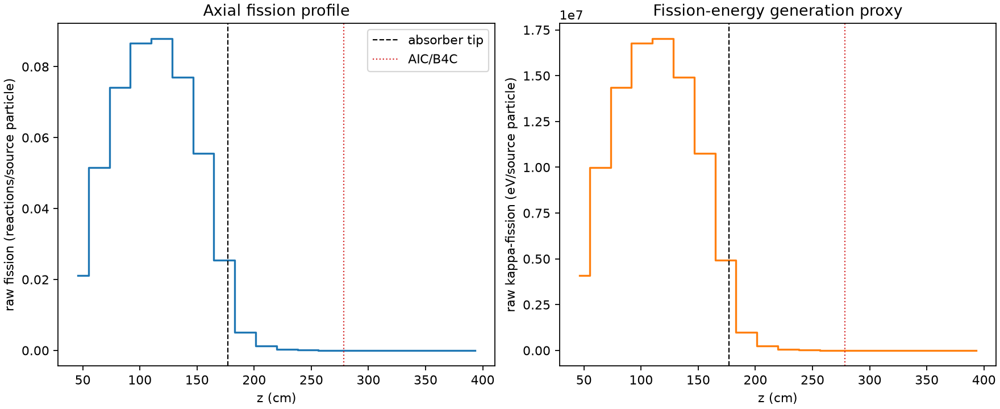
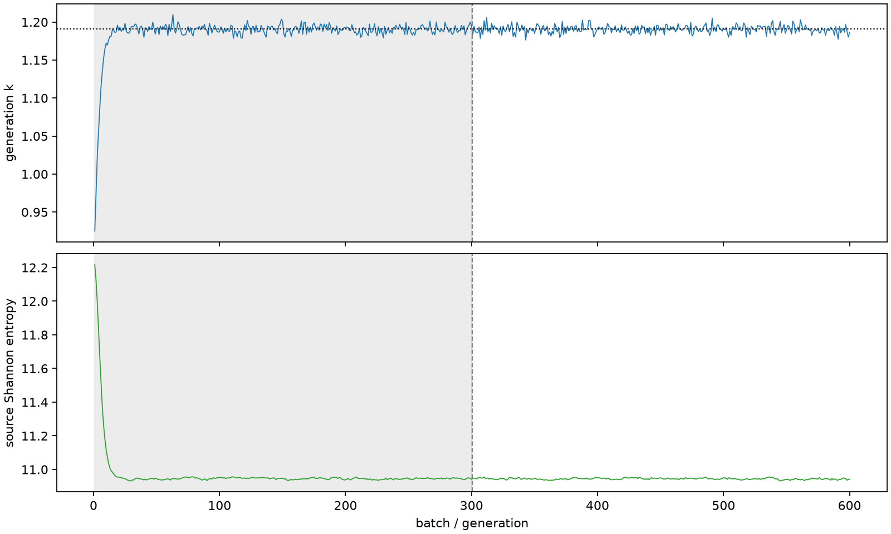

| field | value |
|---|---|
| experiment | V2-STAGE_256_OGRENCI_03-0029 |
| k | 1.1905684873399693 |
| MC standard error | 0.00020016397057140588 |
| seconds | 951.3958142259944 |
| acceptance | not_assessed |
| convergence | review_required |
Completed is output integrity only; physical and statistical review required. Zero tallies do not prove zero production or zero uncertainty.
| diagnostic | value |
|---|---|
| geometric fuel voxels | 5280 |
| zero fission tally voxels | 1226 |
| low signal fuel voxels | 2174 |
| low signal fission share | 7.599711600841895e-05 |
| low signal kappa share | 7.602084525690689e-05 |
| important fission share | 0.9501020665897523 |
| previous filter included | 3106 |
| duration estimate s | 1562.5173488400023 |
| actual minus estimate s | -611.1215346140079 |
| fission relative MC error | statistics |
|---|---|
| all_geometric_fuel | {"voxels": 5280, "positive_mean_voxels": 4054, "zero_mean_voxels": 1226, "undefined_relative_error_voxels": 1226, "median": 0.011761404042432075, "p95": 0.9287358407124078, "maximum": 1.0000000000000002} |
| low_signal | {"voxels": 2174, "positive_mean_voxels": 948, "zero_mean_voxels": 1226, "undefined_relative_error_voxels": 1226, "median": 0.6259639582238213, "p95": 1.0, "maximum": 1.0000000000000002} |
| important_95pct | {"voxels": 1892, "positive_mean_voxels": 1892, "zero_mean_voxels": 0, "undefined_relative_error_voxels": 0, "median": 0.006399003293410503, "p95": 0.010748042324619195, "maximum": 0.012569358442411933} |
| outside_previous_filter | {"voxels": 2174, "positive_mean_voxels": 948, "zero_mean_voxels": 1226, "undefined_relative_error_voxels": 1226, "median": 0.6259639582238213, "p95": 1.0, "maximum": 1.0000000000000002} |
| kappa_fission relative MC error | statistics |
|---|---|
| all_geometric_fuel | {"voxels": 5280, "positive_mean_voxels": 4054, "zero_mean_voxels": 1226, "undefined_relative_error_voxels": 1226, "median": 0.011746764790993307, "p95": 0.9279246569385426, "maximum": 1.0000000000000002} |
| low_signal | {"voxels": 2174, "positive_mean_voxels": 948, "zero_mean_voxels": 1226, "undefined_relative_error_voxels": 1226, "median": 0.627148374203792, "p95": 1.0, "maximum": 1.0000000000000002} |
| important_95pct | {"voxels": 1892, "positive_mean_voxels": 1892, "zero_mean_voxels": 0, "undefined_relative_error_voxels": 0, "median": 0.006391317349687451, "p95": 0.01073671264659736, "maximum": 0.012554586356070324} |
| outside_previous_filter | {"voxels": 2174, "positive_mean_voxels": 948, "zero_mean_voxels": 1226, "undefined_relative_error_voxels": 1226, "median": 0.627148374203792, "p95": 1.0, "maximum": 1.0000000000000002} |
| axial bin | fission share | kappa-fission share |
|---|---|---|
| 1 | 0.04356254719862796 | 0.043564123017690685 |
| 2 | 0.10609155359314469 | 0.1060906332613263 |
| 3 | 0.15248036619237695 | 0.1524787593894045 |
| 4 | 0.17823610479545912 | 0.17823451390800976 |
| 5 | 0.1807118364460668 | 0.1807099208152156 |
| 6 | 0.15836635933797738 | 0.1583645585337476 |
| 7 | 0.11433025500258745 | 0.11432886080462588 |
| 8 | 0.052317494826597595 | 0.052320194887853576 |
| 9 | 0.01059901928430886 | 0.010602752449930277 |
| 10 | 0.0025231150636565334 | 0.002524036143790002 |
| 11 | 0.0005975902999799109 | 0.0005978220341064611 |
| 12 | 0.00014056558848780872 | 0.00014061974793526678 |
| 13 | 3.4923542446237414e-05 | 3.493318171725912e-05 |
| 14 | 6.398012966325144e-06 | 6.399732576949142e-06 |
| 15 | 1.649079691007198e-06 | 1.649873513138514e-06 |
| 16 | 2.2173562532008074e-07 | 2.222185566946814e-07 |
| 17 | 0.0 | 0.0 |
| 18 | 0.0 | 0.0 |
| 19 | 0.0 | 0.0 |
| 20 | 0.0 | 0.0 |
Histories include the inactive-to-active transition at batch 300. kappa-fission approximates fission energy production, not total heat deposition.

